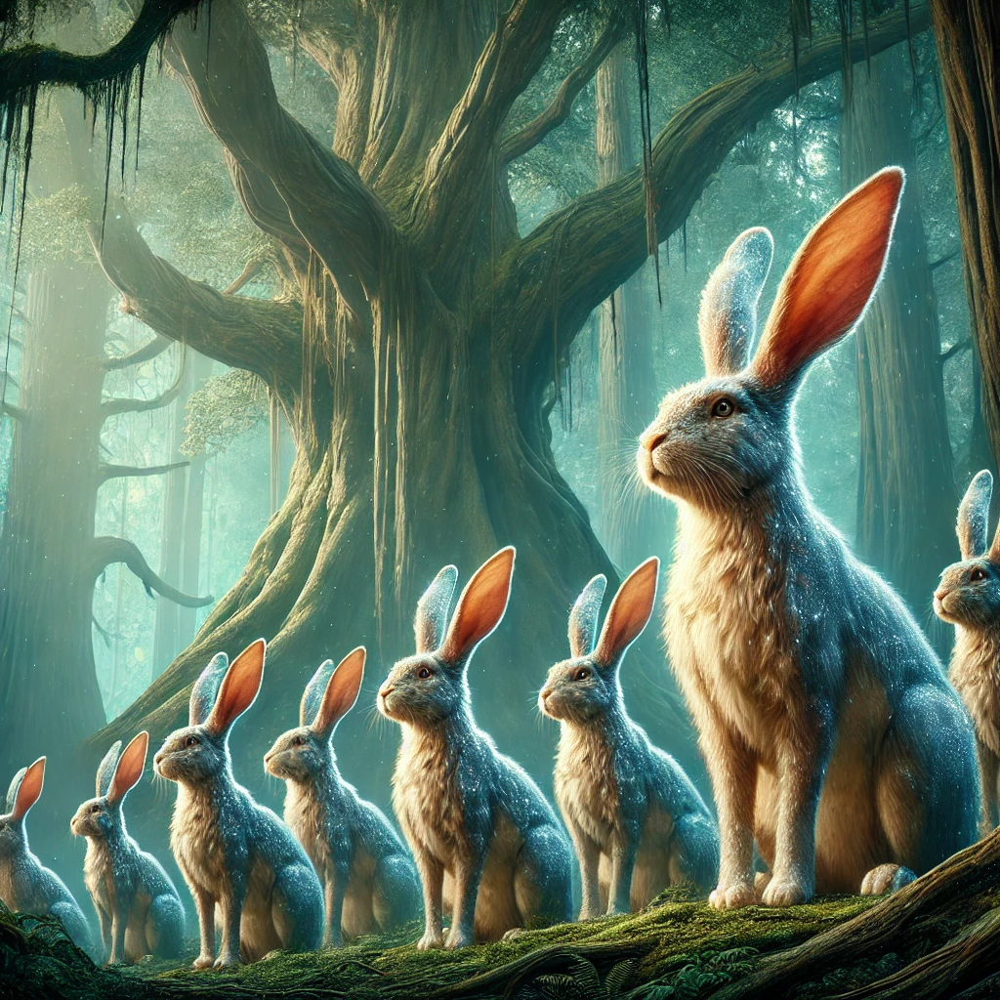
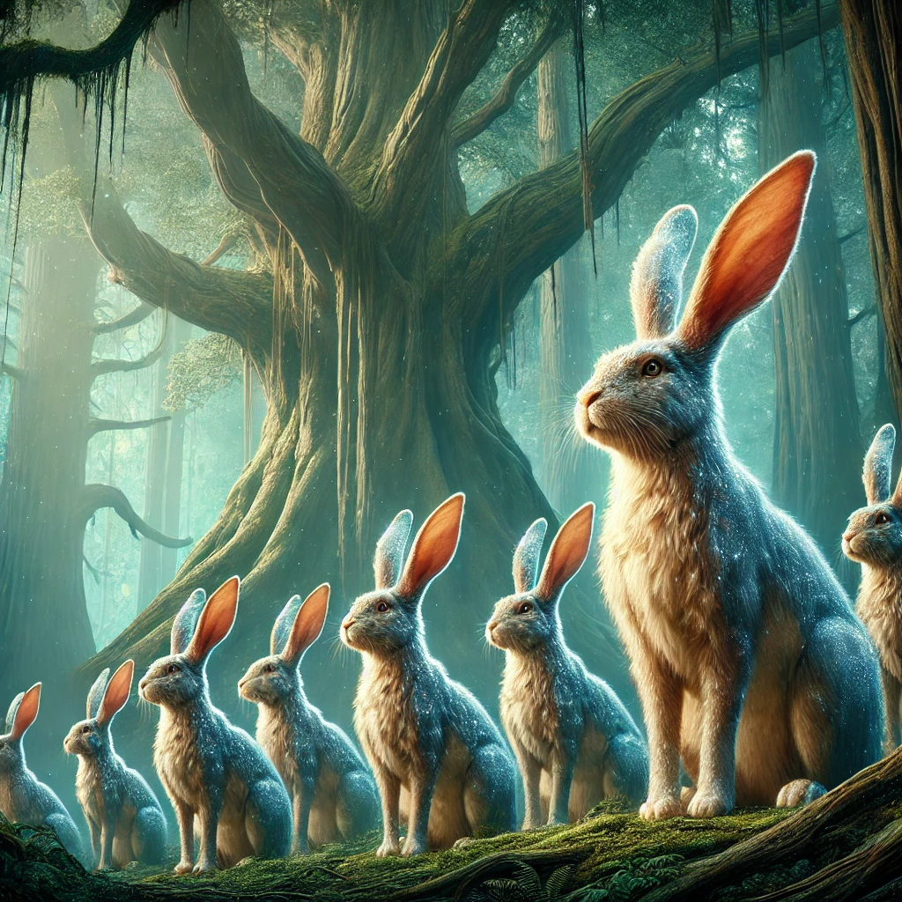

Die alte Schmiede war still, abgesehen vom sanften Knistern eines glimmenden Ofens in der Ecke. Die Luft roch nach Ruß und Metall, und die Wände waren mit alten Werkzeugen und verstaubten Rüstungen bedeckt. In der Mitte des Raumes lag ein Schwert auf einem Amboss, dessen Klinge in einem schwachen, roten Licht pulsierte. Anna konnte die Hitze spüren, die von der Waffe ausging, obwohl sie noch nicht einmal in ihrer Nähe war.
Das Schwert schien sie zu rufen. Seine Gravuren waren kunstvoll, die Klinge schimmerte wie flüssiges Feuer, und der Griff fühlte sich wie eine natürliche Verlängerung ihrer Hand an, als sie es schließlich aufhob. In dem Moment, in dem sie es berührte, flammte die Klinge auf, und ein leises, vertrautes Summen erfüllte die Schmiede.
„Du wirst mein Begleiter sein,“ sagte Anna leise, während sie das Schwert betrachtete. Es war nicht nur eine Waffe, sondern auch ein Werkzeug, das sie auf ihrem gefährlichen Weg unterstützen würde. Mit neuem Mut verließ sie die Schmiede und trat zurück in den unheimlichen Wald.
Die Dämmerung setzte ein, und der Wald, der ohnehin schon bedrohlich wirkte, wurde in tiefe Schatten gehüllt. Der Wind war eisig, und Anna zog ihren Umhang enger um sich. Doch die Kälte wurde unerträglich, und sie wusste, dass sie eine Lösung finden musste, um die Nacht zu überstehen.
Mit einem schnellen Schwung zog sie das brennende Schwert aus der Scheide. Die Flammen züngelten an der Klinge, und Anna nutzte das Feuer, um trockene Äste und Blätter zu entzünden. Bald hatte sie ein kleines, aber warmes Lagerfeuer, das sie vor der Kälte schützte. Sie setzte sich neben das Feuer, das in einem warmen, beruhigenden Licht flackerte, und spürte, wie ihre Erschöpfung langsam wich.
Die Nacht verging ruhig, und als der erste Lichtstrahl des Morgens durch die Bäume brach, fühlte sie sich erfrischt und bereit für die nächste Etappe ihrer Reise.
Gerade als Anna das Feuer löschen wollte, hörte sie ein tiefes, unheimliches Brüllen, das durch den Wald hallte. Sie griff instinktiv nach ihrem Schwert und stand auf. Ihre Augen suchten die Bäume, als plötzlich mehrere große, katzenartige Kreaturen aus den Schatten sprangen. Sie waren perfekt an den Wald angepasst – mit glänzendem, dunklem Fell, das sie in der Dämmerung fast unsichtbar machte, und leuchtend grünen Augen, die wie zwei Scheinwerfer auf sie gerichtet waren.
Die Tiere bewegten sich schnell und leise, ihre muskulösen Körper geschmeidig und tödlich. Das erste Wesen sprang auf Anna zu, doch sie schwang ihr Schwert, und die Flamme der Klinge schoss wie ein Funke durch die Luft. Das Tier wich zurück, doch die anderen kamen näher. Anna wirbelte herum, schlug mit präzisen Bewegungen zu und konnte die Tiere zurückdrängen. Der Kampf war intensiv, doch schließlich gaben die Kreaturen auf und verschwanden wieder in den Schatten.
„Das war knapp,“ murmelte Anna und wischte sich den Schweiß von der Stirn. Mit einem tiefen Atemzug setzte sie ihren Weg fort.
Der Wald stellte weiterhin Herausforderungen. Einmal kam Anna an einen Abschnitt, wo dichte Dornensträucher den Weg blockierten. Ihre Zweige waren mit scharfen Stacheln bedeckt, und ein Versuch, hindurchzukommen, hätte sie schwer verletzt. Doch das Schwert zeigte seine Vielseitigkeit. Mit einem kräftigen Schlag durchtrennte sie die Äste, und die Flammen der Klinge brannten die restlichen Dornen weg.
Ein anderes Mal wurde sie von fliegenden Wesen angegriffen – großen, fledermausartigen Kreaturen mit langen, messerscharfen Klauen. Sie stürzten sich aus dem Blätterdach auf sie herab, und Anna musste sich schnell verteidigen. Mit präzisen Hieben ihrer Klinge konnte sie die Angreifer zurückschlagen und schließlich ihren Weg fortsetzen.
Nach Stunden des Wanderns lichtete sich der dichte Wald endlich, und Anna trat auf eine große, sonnendurchflutete Lichtung hinaus. Es war, als hätte sie eine andere Welt betreten. Die Atmosphäre war friedlich, und ein sanfter Wind wehte durch das Gras. Doch was sie wirklich in ihren Bann zog, waren die Tiere, die hier lebten.
In einer Ecke der Lichtung sah sie eine Herde von gigantischen Hasen. Ihre Augen schimmerten wie Edelsteine, und ihr Fell war so dicht, dass es sie vor der rauen Umgebung des Waldes schützte. Sie bewegten sich mit einer anmutigen Ruhe und wirkten dennoch stark und agil.
Nicht weit entfernt entdeckte Anna eine Herde kleiner, aber stabil gebauter Pferde. Ihre Körper waren kompakt, ihre Beine muskulös, und ihre Bewegungen zeigten eine unglaubliche Geschwindigkeit. Ihre Mähnen schimmerten im Licht, und ihre großen Augen strahlten Intelligenz aus. Es war klar, dass diese Tiere perfekt an die harten Bedingungen des Waldes angepasst waren.
Anna setzte sich ins Gras und beobachtete die Tiere. Die friedliche Szene gab ihr neuen Mut. Sie wusste, dass sie eines dieser Tiere brauchen würde, um ihre Reise fortzusetzen. Mit einem Lächeln auf den Lippen überlegte sie, wie sie eines der Tiere gewinnen konnte. Doch für einen Moment ließ sie die Sorgen hinter sich und genoss einfach die Schönheit des Moments.